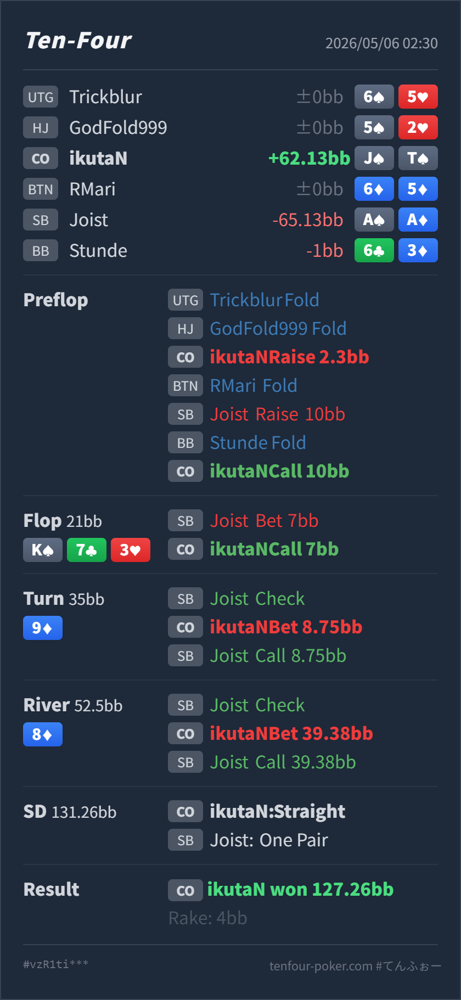

Preflop
良いJ♠T♠ はIPでplayabilityが高く、4betよりcallで実現しやすい hand です。
GTO基準で、CO J♠T♠ の 2.3BB open と、SB 10BB 3bet への call は自然です。flop K♠ 7♣ 3♥ の 1/3 c-bet call は、pair も直接のstraight drawもないためやや薄いですが、IPで backdoor flush / backdoor straight を持つので許容範囲です。良かったのは、turn 9♦ で open-ended straight draw になった後に小さくbetし、river 8♦ で straight 完成後に 39.38BB と大きく value を取り切った点です。SB の AA/AK/KQ から十分に取れるため、river の大きめbetは良いです。
J♠ T♠A♠ A♦K♠ 7♣ 3♥ / 9♦ / 8♦JTs はこの board でnutsなので、SB の overpair / top pair から大きく取りにいけます。J♠ T♠A♠ A♦2.3BB, BTN fold, SB raise 10BB, BB fold, CO Hero callK♠ 7♣ 3♥ / 9♦ / 8♦21BB, SB bet 7BB, CO Hero call35BB, SB check, CO Hero bet 8.75BB, SB call52.5BB, SB check, CO Hero bet 39.38BB, SB call127.26BB, rake 4BB
良いJ♠T♠ はIPでplayabilityが高く、4betよりcallで実現しやすい hand です。
K♠ 7♣ 3♥やや薄いが許容
Hero は no pair ですが、backdoor spade、Q 周りの broadway runout、9/8 方面の straight equity が残ります。
9♦良いJ♠T♠ は showdown value はほぼなく、equity のあるsemi-bluff候補です。
8♦良い
nutsのvalue handです。
| 論点 | その場で置いた見立て | どこがズレやすいか | 次回の基準 |
|---|---|---|---|
| flop small c-bet call | 1/3 pot なので、JTs はIPで一度見られそう | 価格は良いですが、flop時点では pair もgutshotもありません。続行理由は broadway 2枚そのものではなく、backdoor spade と Q/9/A 付近で turn に戦えるカードがあることです。 | 3bet pot の no pair float は、IP・小サイズ・backdoor が揃う時だけ。turnで改善しなければ素直に諦める |
| river の value size | straight だが、上のstraightがあるかもしれず大きく打ちすぎかもしれない | この board では JTs がnutsです。QT はJがないためstraightにならず、SB の3bet rangeには AA/AK/KQ などの one pair bluff-catcher が厚く残ります。 | nuts straight は大きくvalueを取る。相手に overpair / top pair が多いなら、遠慮して小さくしすぎない |
| ストリート | その時点の見え方 | 実ハンドの位置づけ | 評価 | その場の一手 |
|---|---|---|---|---|
| Preflop | CO の 2.3BB open は基準サイズです。SB の 10BB 3bet はOOPからの自然な大きさで、強いAx、overpair、suited broadway、低頻度のbluffが中心になります。 | J♠T♠ はIPでplayabilityが高く、4betよりcallで実現しやすい hand です。 | 良い | call で問題ありません。dominated risk はありますが、position と suited connectivity で戦えます。 |
Flop K♠ 7♣ 3♥ | SB は AA/KK/AK/KQ を多く持ち、range advantage があります。1/3 pot は広く打ちやすいサイズです。 | Hero は no pair ですが、backdoor spade、Q 周りの broadway runout、9/8 方面の straight equity が残ります。 | やや薄いが許容 | call はできますが、turnで改善しなければ降りる前提です。spadeなしのJToならかなりfold寄りです。 |
Turn 9♦ | SB がcheckしたことで、強いKxやAAも残りますが、range全体は少し抑えられます。Hero は Q と 8 でstraightになる open-ended draw を得ました。 | J♠T♠ は showdown value はほぼなく、equity のあるsemi-bluff候補です。 | 良い | 8.75BB の小さめbetは良いです。相手のAQ/AJや一部のunderpairを降ろしつつ、callされてもriverで改善できます。 |
River 8♦ | Hero は 7-8-9-T-J の straight を完成しました。この board では JTs がnutsで、SB には AA/AK/KQ の bluff-catcher がかなり多く残ります。 | nutsのvalue handです。 | 良い | 39.38BB の大きめbetで問題ありません。overpair / top pair から最大値を狙えます。raise された場合も、同じ JTs との chop 以外にはかなり強く続行できます。 |
JTs はCO open後、SB 3betに対してIPでcallしやすい hand です。preflop は良いです。JTs がstraightを完成したら、この board ではnutsです。SBのoverpair / top pair から大きく取ります。A♠A♦ で、turn check-call、river large bet call まで進んでいます。overpair を降りにくい相手には、今回のような river 大きめvalue がかなり有効です。